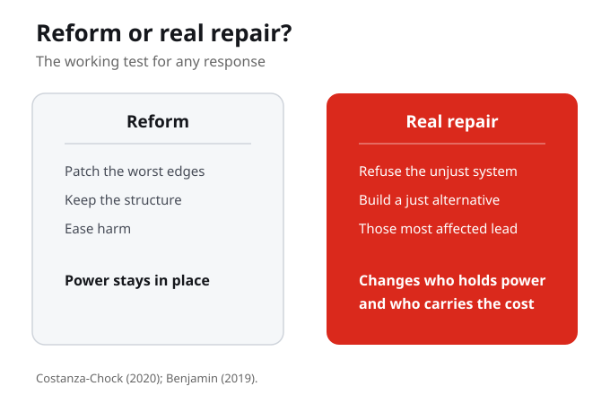

From seeing to building
All term you have learned to see the New Jim Code and trace its harms. This week the course turns. We stop tracing harm and start asking how to build differently. The subtitle of Benjamin's book is Abolitionist Tools for the New Jim Code, and this is the week we pick up the tools. By the end you should be able to name a response, not only a diagnosis, for a system in your own map.
Seeing harm lets you stay a critic on the outside. Building forces you to commit to a vision and own its flaws. The tools are not neutral, and picking them up means taking a side.
For one system you have studied this term, what would it mean to move from naming the harm to proposing a response?

Reform or Real Repair?
There are two ways to respond to a harmful system. One is reform: patch its worst edges and keep the structure, easing harm but leaving power in place. The other is abolition and redesign: refuse the unjust system, build a just alternative, and change who holds power and who carries the cost. Design justice does this by centring those most affected so they lead, not so they are consulted at the end.
Reform and real repair are not two sizes of the same fix. Reform eases harm but leaves power in place. A real repair changes who holds power and who carries the cost.
What is the difference between a reform that leaves a system intact and a real repair, and which one is your field actually willing to make?

Two ways to respond to a harmful system
There are two ways to respond to a harmful system. One is reform: patch its worst edges, keep the structure. The other is abolition and redesign: refuse the unjust system, build a just alternative, change who holds power. They are not the same.
Patching the worst edges and keeping the structure is not the same as refusing the unjust system and building a just alternative. Naming them as the same is how harmful structures survive.
Our main tool
Our main tool is design justice, from Sasha Costanza-Chock and the Design Justice Network. It centres the people normally marginalized by design. Its principles include centring the voices of those directly impacted, prioritizing impact over the designer's intentions, treating everyone as an expert by lived experience, and working toward community-led outcomes. Those most affected lead, they are not consulted at the end.
Design justice centres the people normally marginalized by design. Those most affected lead the work, they are not consulted after it is built, and everyone counts as an expert by lived experience.
What changes when the people harmed lead the design, instead of being consulted at the end?
Impact over intentions
Design justice moves past the idea of design for good, because good intentions are not enough. Its test is not the designer's intent but the design's impact on the community. A designer who meant well gets no credit here, only the lived result counts. That is one reason the New Jim Code keeps spreading: good intentions keep getting mistaken for good outcomes.
This flips how we usually judge technology. A designer who meant well gets no credit, only the lived result counts, which is why good intentions keep getting mistaken for good outcomes.
Where have you seen a well-intentioned design still cause harm to the people it claimed to help?
Everyone an expert by lived experience
One design justice principle reads: treat everyone as an expert in their own lived experience. Read it as a transfer of power, not a checklist item. It means the community stops being data to study and becomes the authority that decides. Another principle looks first for what already works at the community level, honouring traditional, Indigenous, and local knowledge rather than starting from scratch.
Expert in their own experience means the community stops being data to study and becomes the authority that decides. Ask who, in your own examples, is usually treated as a problem rather than an expert.

Benjamin calls for abolitionist tools: not patches, but tools
Benjamin calls for abolitionist tools: not patches, but tools that refuse a system and help build something just. An abolitionist tool asks not how to fix the gate, but whether the gate should exist. Tiera Tanksley shows this in teaching, centring Black youth as innovators, not only as harmed.
An abolitionist tool can be a refusal. Sometimes the most just design is to not build the thing at all. Which technologies you have studied this term should simply not exist?
What would it mean to refuse a system rather than improve it?
Black youth as innovators
Tiera Tanksley (2023) models this in teaching: an abolitionist, critical race pedagogy in computer science. It centres the voices, experiences, and technological innovations of Black youth. The shift is from seeing communities only as harmed to seeing them as designers and builders. If communities are only ever the harmed, we still hold the power to fix them. Seeing Black youth as designers breaks that.
This is where the course argument completes itself. When the people closest to the harm become the ones who redesign the system, the assumption that they only need fixing falls apart.
Where have you seen a community build its own tools, rather than wait to be designed for?
The working test
So the working test is: reform or real repair? A reform eases harm but leaves power in place. A real repair changes who holds power and who carries the cost. Use this test on solutions that sound generous. More diverse data, or a fairness audit, can ease harm while the same company keeps deciding everything.
The working test is one question: reform or real repair? Ask of any fix, after this change, who still decides? If the answer is unchanged, you have polished the gate, not removed it.
For one system in your own map, is the response you would argue for a reform or a real repair, and how do you know?
Knowledge Check 2: diagnosis and response
Your second Knowledge Check video adds a step. As before, you walk through one system from your own Living Cartography, in your own voice and on your own screen. This time you add the Part III move: not only what is wrong, but what a design-justice or abolitionist response would change. Name the dimension and who is harmed, say whether the harm is designed or incidental, propose a response, and say whether it is a reform or a real repair. Full instructions are in the Knowledge Check 2 file.
Anyone can spot what is broken. The harder skill is proposing a change and saying honestly whether it shifts power or just softens the blow. Hold your own answer to the reform-or-repair test.
What You Are Learning This Week
From Critique to Construction
Week 11 turns the course from naming harm toward building responses. The task is no longer only to see a harmful system clearly, but to propose an anti-racist response to it.
Design Justice Puts Those Affected in the Lead
Design justice, drawn together by Costanza-Chock and the Design Justice Network, centres the people normally marginalized by design. They lead the work and count as experts by lived experience; impact matters more than the designer's intentions.
Abolitionist Tools Refuse, They Do Not Patch
Benjamin calls for abolitionist tools, not patches. A patch asks how to fix the gate's edges. An abolitionist tool asks whether the gate should exist at all, and helps build a just alternative.
Reform Versus Real Repair Is the Test
A reform eases harm but leaves power in place. A real repair changes who holds power and who carries the cost. This distinction is the working test for any response you propose.